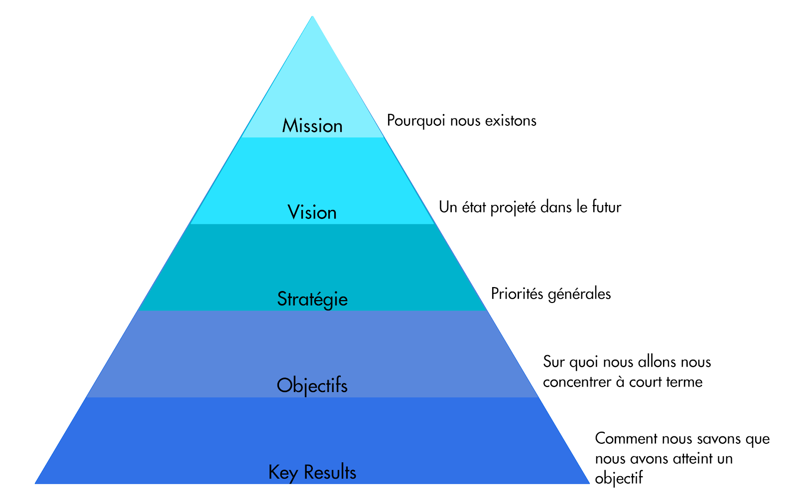

En quoi le Framework OKR consiste-t-il ?
Le Framework OKR (OKR signifiant Objectives and Key Results) fut popularisé en 2013 par Rick Klau, GV Partner au sein du Google Ventures Startup Lab, dans une vidéo devenue virale nommée Startup Lab workshop: How Google sets goals: OKRs. Cet outil de management fut initialement conçu par une légende de la Silicon Valley, Andy Grove, PDG d’Intel Corporation entre 1987 et 1998, puis transmis à Google par l’intermédiaire de John Doerr, un ancien employé d’Intel devenu investisseur en capital risque.
Fortement inspiré de la théorie du Management By Objectives de Peter Drucker, Andy Grove y apporta quelques modifications clés dans le but de mieux répondre à deux questions fondamentales :
- Où voulons-nous aller ? (l’objectif)
- Comment allons-nous mesurer le rythme auquel nous y allons ? (le résultat clé)
Pour expliquer en quoi consiste le Framework OKR, nous allons nous appuyer sur l’ouvrage de Paul R. Niven et Ben Lamorte, “Objectives and Key Results: Driving Focus, Alignment, and Engagement with OKRs,” Les auteurs en donnent la définition suivante : “Les OKRs constituent un système managérial qui a pour but d’aider les équipes à travailler ensemble et à participer au succès de l’organisation à travers des contributions explicites et mesurables.” Pour le synthétiser plus simplement : les OKRs sont une façon de rendre les objectifs visibles de tous et mesurables.
Dans ce framework, un objectif est un énoncé qui décrit un état futur à atteindre. Toujours associé à un objectif; un key result est un indicateur dont la mesure renseigne sur l’évaluation effective de l’atteinte de cet objectif. En règle générale, un objectif se décline en 2 à 5 key results.
Eléments de context des OKRs
Le Framework OKR s'inscrit généralement dans un cycle trimestriel. Au terme de chaque trimestre, les résultats sont revus et discutés dans l’optique de capitaliser sur les décisions et les actions qui ont été entreprises, et de nouveaux OKRs sont définis. “Management par intention”. Cette méthode repose sur les principes suivants : ne pas indiquer aux collaborateurs ce qu’ils doivent faire, mais leur indiquer les objectifs qu’ils doivent atteindre et leur laisser l’initiative de trouver le chemin optimal.
Comment déployer de façon adéquate le Framework OKR dans votre organisation ?
Pour définir un objectif pertinent, vous devez veiller à respecter un certain nombre de critères. Ainsi, un objectif adéquat doit être :
- Inspirant : Le but est de faire adhérer l’équipe à une ambition qui dépasse la simple gestion des affaires courantes ;
- Réalisable : Même si la philosophie des OKRs suggère de fixer des objectifs relativement ambitieux, pour autant, ceux-ci ne doivent pas être perçus comme insensés, au risque d’avoir un effet contre-productif et démotiver votre équipe ;
- Atteignable en un trimestre : Les OKRs s’inscrivant généralement dans un cycle de 3 mois, si vous définissez un objectif qui n’a objectivement aucune chance d’être atteint au terme de cette période, vous prenez le risque d’atténuer la pertinence du challenge et, par conséquent, d'affecter la dynamique des équipes ;
- Contrôlable par l’équipe : Quel que soit l’objectif défini, l’équipe doit être pleinement capable de parvenir à la cible de façon autonome, ce qui signifie qu’elle doit posséder tous les moyens d’y parvenir ;
- Créant de la valeur : C’est un critère qui peut paraître évident, mais il est parfois opportun de prendre du recul et remettre les objectifs de l’équipe en perspective de ceux de l’organisation ;
- Qualitatif : Les objectifs ne doivent pas contenir d’éléments chiffrés, ils doivent rester courts et textuels.
Au même titre que les objectifs, pour être pertinents, les key results doivent aussi respecter plusieurs critères. Ils doivent être :
- Quantitatifs : Les key results sont toujours quantitatifs, de façon à pouvoir utiliser des indicateurs objectifs pour déterminer si oui ou non, et dans quelle mesure, une cible a été atteinte ;
- Ambitieux : Définir des objectifs ambitieux mais atteignables participe à entretenir un niveau de motivation optimal au sein de l’équipe ;
- Spécifiques : Éviter les énoncés ambiguës, combinant plusieurs sujets. Un bon key result doit être précis et facilement interprété par toutes les parties prenantes ;
- Responsabilisant : Même si le management inspire généralement la stratégie, les OKRs doivent principalement émerger de l’équipe elle-même ;
- Mesurables fréquemment : Pouvoir régulièrement mesurer les indicateurs, par exemple, toutes les deux semaines, permet à l’équipe de rester pleinement concentrée sur l’atteinte de ses objectifs ;
- Cohérents avec le reste de l’organisation : Afin de déceler les éventuelles dépendances ou incohérences dans les objectifs, les OKRs doivent toujours être revus par le management et par les autres équipes ;
- Insufflant le bon comportement : Avant de définir un objectif à atteindre, il faut penser aux éventuels impacts négatifs sur le comportement et l’éthique des membres de l’équipe.
Pour évaluer l’atteinte des objectifs, le Framework OKR suggère d’utiliser une échelle allant de 0 à 1 :
- 1: Cette note correspond à l’atteinte totale de l’objectif ambitieux qui a été fixé ;
- 0.7: Ce score reflète l’atteinte d’une cible ambitieuse mais relativement atteignable compte tenu des performances passées de l’équipe ;
- 0.3: Ce chiffre caractérise un niveau de performance pouvant être considéré comme étant “business as usual” ;
- 0: Aucun progrès.
Quelques conseils de la part de Itamar Gilad, ex-Google PM et auteur
Dans un ebook publié récemment, OKRs Done Right, Itamar liste 5 antipatterns que, bien sûr, il vous recommande d’éviter :
- Utiliser les OKRs pour exprimer un plan : Comme évoqué précédemment, le but des OKRs est de participer au management par intention. Les objectifs sont l’expression de bénéfices attendus, non pas de tâches ou de fonctionnalités à développer. C’est à l’équipe de décider de façon autonome les initiatives qu’elle doit prendre pour atteindre ses objectifs ;
- Définir des Key Results non SMART : Pour rappel, l’acronyme SMART signifie Spécifique, Mesurable, Ambitieux, Réaliste, et temporellement défini (“Time-Bound”) ;
- Definir trop d’OKRs : En matière d’OKRs, moins est véritablement mieux. Courir après trop d’objectifs différents réduit inexorablement la capacité de l’équipe à se concentrer sur les enjeux les plus importants. Au cours d’une période donnée, il est généralement recommandé de se limiter au maximum de 3 objectifs et 5 key results par objectif ;
- Imposer les OKRs à l’équipe : Bien sûr, les grandes axes de la stratégie sont insufflés par le management, néanmoins, il est essentiel que l’équipe s’approprie ses objectifs et participe à leur définition ;
- Utiliser les OKRs comme instrument d’évaluation RH : Bien que cela puisse paraître une bonne idée a priori, dans les faits, utiliser les OKRs comme instrument d’évaluation RH peut conduire l’équipe à adopter des comportements non éthiques, particulièrement dommageables sur le long terme.
Suggestions de ressources pour devenir un expert du Framework OKR
- La vidéo de Rick Klau qui a popularisé les OKRs dans le monde entier : Startup Lab workshop: How Google sets goals: OKRs.
- Un billet de blog très complet publié sur La Fabrique du Net : Définissez vos objectifs avec la méthodologie OKR.
- Un bon complément de lecture pour déployer les OKRs à l’échelle de l’organisation : Framework OKR.